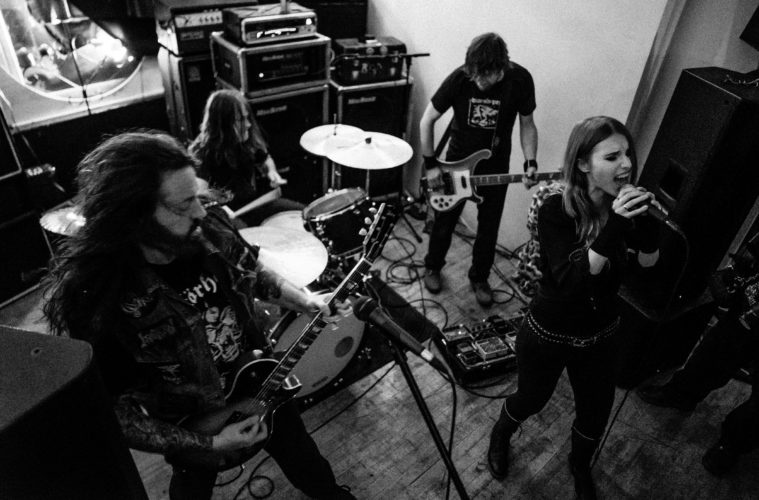

Doom Metal
Influences
Doom metal is unique from other subgenres in Extreme Metal, in that it has taken no influence from Hardcore Punk.
Doom metal's influences are almost entirely rooted in that of Early Black Sabbath, which was heavily based on a heavier version of the blues.
Description
Doom Metal is a subgenre that almost always utilizes slow tempos, low tunings and a fuzz based guitar tone that allows for a very "thick" tone.
Doom Metal structures are heavily rooted in the blues. It utilizes Minor keys and, uniquely in metal, blues scales, with a focus on repetitive rhythms with very little regard for harmonic progression. Black Sabbath guitarist, Tony Iommi's guitar playing defined the guitar playing style for the entire genre. Vocals in Doom Metal are most often times sung clean, using the high pitched wails, to match the atmosphere provided by the lyrics.
The lyrics in Doom Metal are almost exclusively downtrodden, including themes of suffering, depression, fear, grief, death, dread, anger and all kinds of super depressing stuff. Some bands also make use of religious thematics, and occult/pagan imagery.
Brief History
In the Early 1970s, Black Sabbath, Pentagram and Blue Cheer composed and performed a new type of dark and heavy music, creating Heavy Metal. Throught the use of loud amplifiers and fuzzy distortion, creating the prototype for Doom Metal.
Doom Metal as a whole, never achieved mainstream success of any kind. However, during the 1980s, Doom Metal began to transform into a distinct genre of it's own and began to develop a strong presence in the global metal underground. The Swedish band, Candlemass would release their debut album, Epicus Doomicus Metallicus in 1986, which would go on to pioneer the 'Epic Doom Metal' subgenre, which would go on to be arguably more popular than traditional doom metal. Like other Extreme Metal subgenres, doom metal enjoys a large amount of regional scenes and subgenre divisions.
Examples
- Candlemass
- Pagan Alter
- Pentagram
- Count Raven
- Sunn O)))
- Novembers Doom
- Saint Vitus
- The Obsessed
- Electric Wizard
Subgenres and Regional Scenes
Major Subgenres
Sludge Metal is a very special and distinct subgenre of Metal. Coming from a very tight knit group of musicians in New Orleans, Sludge metal combines the sensabilities of Doom Metal, Hardcore Punk and Southern Rock. Bands such as Down, Superjoint Ritual and Eyehategod came out of this scene.
Stoner Metal describes doom metal that has taken the opposite route of sad and gloomy. Stoner metal bands incorporate more elements of psychedelic rock and acid rock. A very groovy genre that makes heavy use of guitar modulation effects such as phaser and flanger. They also tend to use melodic vocals, lofi production and mid tempos.
Death-Doom Metal combines the slow tempos and downtrodden vibes of doom metal, with the complex riffs and growling vocals of Death Metal. Death Doom was also partly responsible for the rise of Gothic Metal, which saw some mainstream popularity. Paradise Lost pioneered this genre, and was continued on by Autopsy and My Dying Bride.
Notable Regional Scenes
Finnish Doom Metal has a heavy focus on it's lyrics and theme. It aims to evoke a sense of dread and grieving. They play very slow with shrieking vocals. Bands out of this scene include Rigor Mortis, Skepticism and Unholy.
DC Doom Metal is a regional scene in Washington DC that was kickstarted by Pentagram in the very early 80s. This scene has formed it's own unique sound more remiscant of the tradional doom metal bands such as Black Sabbath, also named "The Hellhound Sound", after Hellhound Records, who signed most of these bands.
The Palm Desert Scene, based out of Palm Desert, California, is home to a unique blend of doom metal, stoner rock, blues and hardcore punk. This scene is unique for it's focus on free form jamming and very "sludgy" grooves. Bands out of this scene include Kyuss and Queens of the Stone Age.